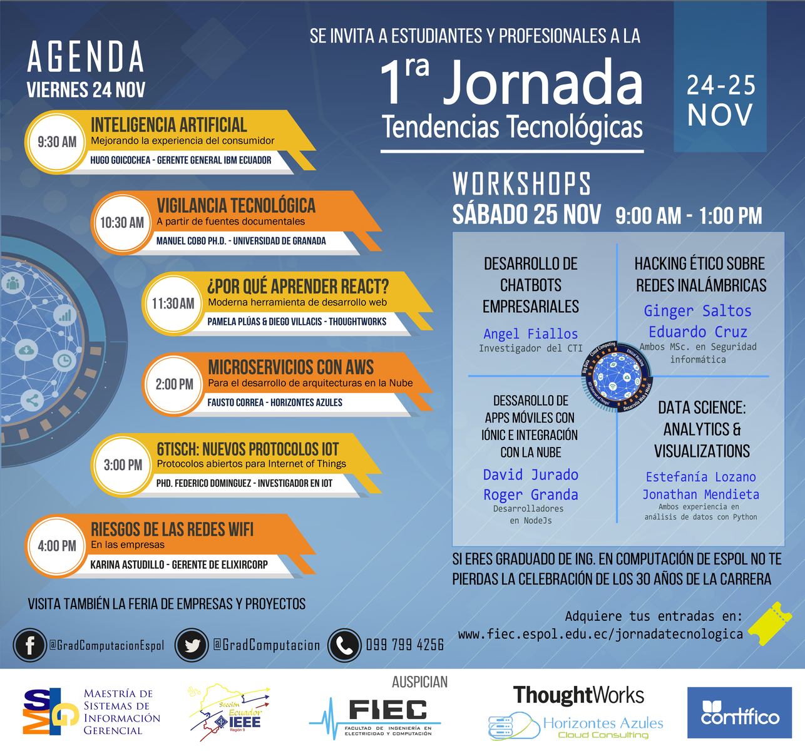
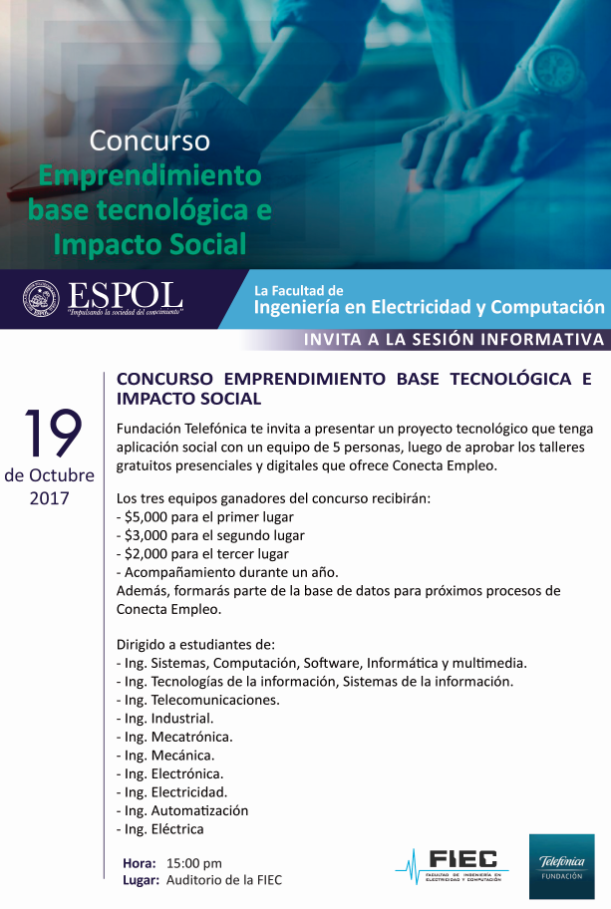

Noviembre 24

1ra Jornada de tendencias tecnologicas
Jornada dictada por profesionales especializados en:
Inteligencia artificial.
Vigilancia tecnologica.
Octubre 19

Concurso emprendimiento
Fundacion Telefonica invita a presentar un proyecto tecnologico
que tenga aplicacion social.
Octubre 16

Mobile robots control
El Dr. Roland Lenain brindara una conferencia
relacionada a su trabajo con el desarrollo
de robots de trabajo en entorno naturales.